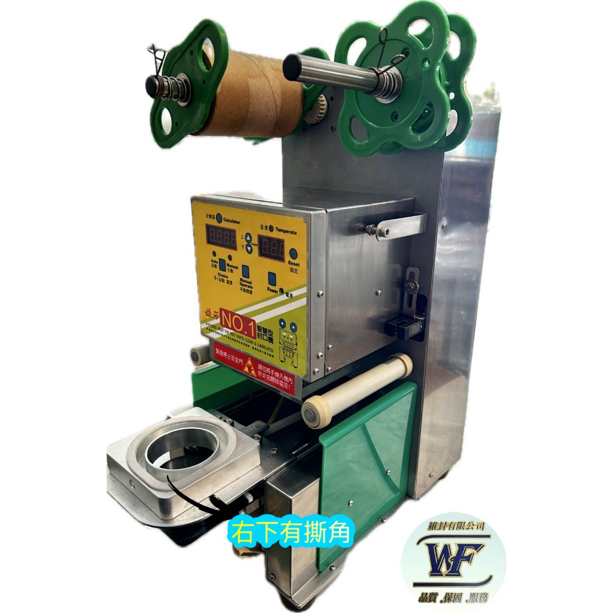
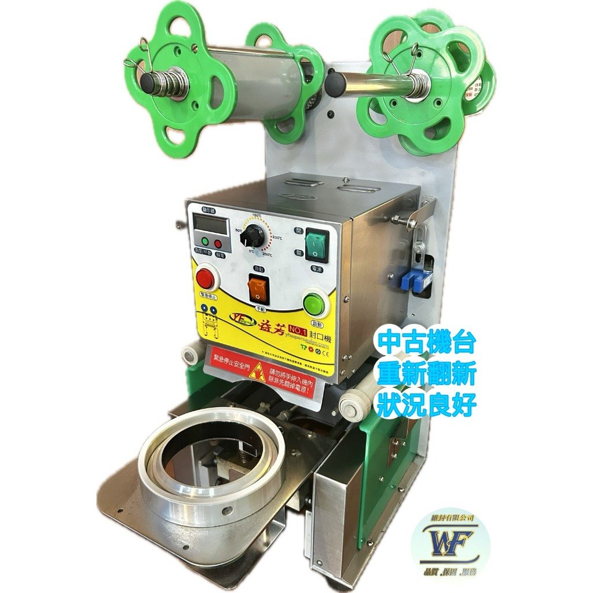
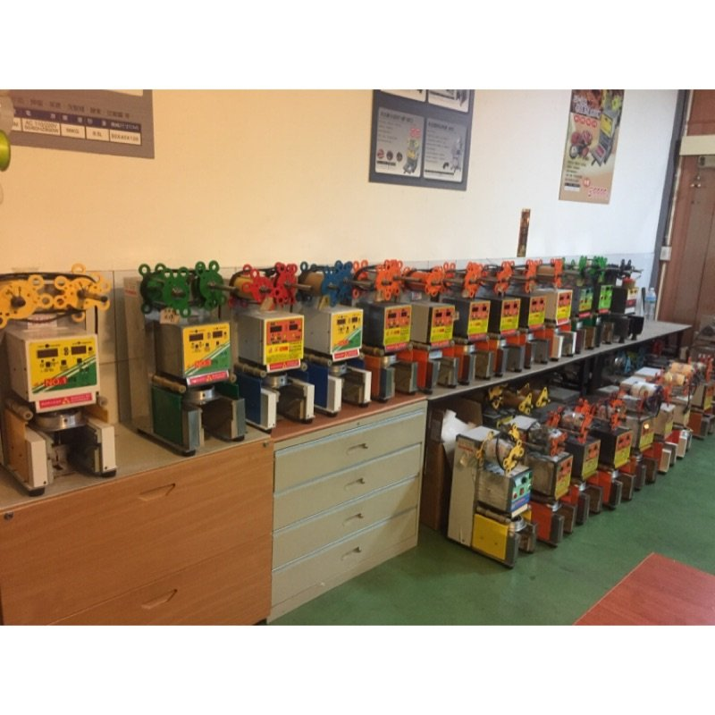
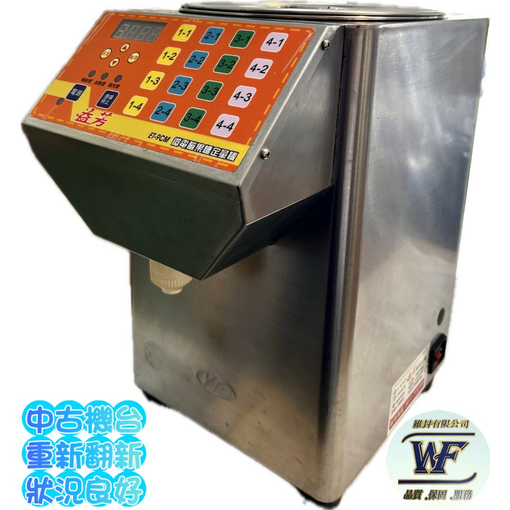

封口機
買賣、維修與大保養，含微電腦、機械式、碼錶機械式等機型。
台中合法專業「益芳封口機授權代理經銷商」
台中霧峰在地經營，專營封口機、果糖機、封口膜、私版封口膜印刷與醬包機的維修、大保養與中古機買賣。中古機僅售台中、彰化、南投；口徑與型號以現貨為主，下單前請先聯絡。
本公司是台中合法專業「益芳封口機授權代理經銷商」，門市位於台中市霧峰區林森路827號，服務中部手搖飲與餐飲業者的封口、給糖與相關設備需求。
現場可看機、測試容器規格，並提供維修與保養（NT$800 起，限中彰投）。二手機流動較快，歡迎先來電或至蝦皮賣場確認現貨。
設備買賣、維修與耗材一次諮詢。維修與保養NT$800 起，限中彰投。
買賣、維修與大保養，含微電腦、機械式、碼錶機械式等機型。
16鍵、24鍵等機型之維修、保養與中古機買賣。
封口膜供應與使用諮詢。
可依店家需求洽詢私版封口膜印刷。
醬包機維修與相關設備諮詢。
NT$800 起，限中彰投。歡迎先來電預約。
NT$800 起
以下依機型整理參考售價，不逐台上架。價格僅由目前蝦皮賣場現貨計算，實際成交依機況與口徑而定。
價格為參考，依機況與口徑而定；二手機流動快，實際庫存請來電 04-23398679 或看蝦皮賣場；中古機僅售中彰投。










看機、維修預約與中古機規格確認，歡迎直接來電。中古機僅售台中、彰化、南投。